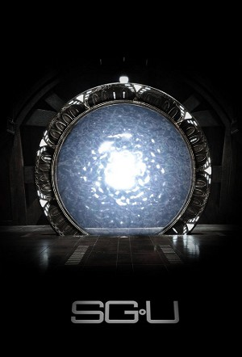

Stargate Universe (2009)
ActionAdventureDramaScience Fiction
| Year | 2009 |
|---|---|
| Rating | TV-14 |
| Status | Completed |
| Seasons | 3 |
| Episodes | 74 |
| Genre | Action, Adventure, Drama, Science Fiction |
The previously unknown purpose of the ninth chevron is revealed and takes a group of refugees on a one-way trip to a millions of years old Ancient-built ship. Led by Dr. Nicolas Rush and Colonel Everett Young, the refugees are trapped on the ship, unable to change its programmed mission.
Episodes
Specials
Special installments of the series.
| # | Title | Air Date | Synopsis |
|---|---|---|---|
| 1 | Access All Areas | 2009-10-06 | Behind the scenes of the sci-fi series, as self-proclaimed superfan Nidai interviews the cast and takes a tour of the show's Vancouver set. |
| 2 | Kino Webisode 1 : Get Outta Here | 2009-10-22 | Colonel Young is in his quarters going over paper work. The Kino enters and watches him over his shoulder. He notices it's presence and closes his folder. He tells Eli that even though he gave him permission to keep an e |
| 3 | Kino Webisode 2 : Not the Comm Lab | 2009-10-22 | Eli is talking into the Kino and showing us around the ship. He enters a room he thinks is the Communications Lab but it is actually the Infirmary. He says that they don't know what half of the machines do. |
| 4 | Kino Webisode 3 : No Idea | 2009-10-22 | Eli again is showing us the ship and he enters a room that he has no idea what it is. He says he doesn't think he has been in it before. |
| 5 | Kino Webisode 4 : The Stargate Room | 2009-10-22 | Eli shows us his favorite room on the ship, the Stargate Room. He says that Rush believes this Stargate is older then all other Stargates and might be a prototype. |
| 6 | Kino Webisode 5 : Eli's Room | 2009-10-22 | Eli shows us his very small sleeping quarters. He says that he hopes it is only temporary because there are more compartments that can't be entered because they are damaged. He says Rush wants them to be fixed but Young |
| 7 | Kino Webisode 6 : Don't Encourage Him | 2009-10-23 | The Kino enters the Mess Hall where Scott, Johansen, and Greer are having lunch. Scott says hello and Johansen tells him not to encourage him because he was caught spying on Lt. James. Eli denies it and says that Riley w |
| 8 | Kino Webisode 7 : Corridor Conversation | 2009-10-23 | The Kino turns a corner and zooms in on Scott and Chloe having a conversation but they are too far away for the mic to pick it up. |
| 9 | Kino Webisode 8 : Marked Hatch | 2009-10-26 | Eli comes up to a hatch marked with 2 X's. He says that if he opened the hatch he would be sucked out into space. |
| 10 | Kino Webisode 9 : Not Supposed to Be in Here | 2009-10-26 | Eli enters the Shuttle and explains that Destiny has two of them but one is inaccessible. He says he is not supposed to be in it because it is for military personnel only. |
| 11 | Kino Webisode 10 : Nobody Cares | 2009-10-26 | Eli is interviewing Chloe in her quarters and asking her personal questions. She tells him that nobody cares what her favorite color is because she is not important. Eli disagrees and tries to cheer her up. She says she |
| 12 | Kino Webisode 11 : Kino Race | 2009-11-02 | Eli and Riley are in the corridor preparing for a Kino race. They start down the corridor and turn the corner and Eli's almost hits Camille. |
| 13 | Kino Webisode 12 : Covered Kino | 2009-11-02 | Lt. James enters the shower room and takes off her shirt. She looks up and sees the Kino hovering near the ceiling. She using her shirt to cover the Kino. |
| 14 | Kino Webisode 13 : Variety | 2009-11-02 | Becker and Inman are trying to isolate flavorful esters (such as banana flavoring) from chemical impurities in the water from the ice planet in order to make the rations more enjoyable. Becker asks if it is possible to g |
| 15 | Kino Webisode 14 : You Okay? | 2009-11-11 | Scott enters Chloe's quarters and asks if she is okay. She says she really thought they were going home. Scott says that she must be happy to be going to Earth. She says that seeing her mom that way just makes things har |
| 16 | Kino Webisode 15 : Do I Look Stupid? | 2009-11-11 | Scott and Volker are helping Riley and Brody put on the space suits. Brody thinks he looks stupid but Scott assures him he looks cool. Riley realizes he has to go to the bathroom and Scott tells him to go in the suit bec |
| 17 | Kino Webisode 16 : All Telford's Fault | 2009-11-11 | Brody is in his quarters and blaming himself for what happened to Riley but Park tells him he couldn't have done anything. Brody says it is all Telford's fault and Rush is right that he is going to get everyone killed. P |
| 18 | Kino Webisode 17 : What's That Light? | 2009-11-11 | While walking down a corridor, Sgt. Ronald Greer and Lt. Matthew Scott (and possibly the entire ship) hear the intercom come on and the voices of Adam Brody and Lisa Park testing something they just invented. The Kino is |
| 19 | Kino Webisode 18 : New Kind of Crazy | 2009-11-15 | Eli and Lt. Scott discuss the discovery of the two Kinos found on a Jungle planet - upon the one is a recording of an alternative timeline Matthew Scott. The recording informs the present crew about a disease that was in |
| 20 | Kino Webisode 19 : Only Run When Chased | 2009-11-19 | Eli Wallace is sitting with Lisa Park, Dale Volker and Adam Brody are watching an episode of South Park from Eli's cell phone, and find one scene hilarious. They are then interrupted by Matthew Scott, who notices that it |
| 21 | Kino Webisode 20 : Want Me to Bust Him Up? | 2009-11-25 | Walking down a corridor aboard Destiny followed closely by a Kino, Ronald Greer hears crying. He pauses and motions for the Kino to turn right. In a room around the corner, Dr. Lisa Park is pacing and muttering to hersel |
| 22 | Kino Webisode 21 : The Apple Core | 2009-11-15 | Eli Wallace introduces the Destiny's Control interface hub. He calls it "apple core" but this name displeases Adam Brody who demands to call it control interface. Brody tries to get support from Lisa Park and Dale Volker |
| 23 | Kino Webisode 22 : Not Just for Posterity | 2009-12-10 | Dr. Lisa Park records a video diary about her time on Destiny and mentions here friends and family. However, she is interrupted and proceeds to have sex with an apparently close male friend. |
| 24 | Kino Webisode 23 : We Volunteer to Do This | 2010-04-16 | Eli interviews Airman Kelly, while her consciousness is in Chloe's body, about why she volunteered to use the communication stones. |
| 25 | Kino Webisode 24 : Wait for It | 2010-04-23 | Dr. Brody attempts to take revenge on Sgt. Riley by playing a prank on him. |
| 26 | Kino Webisode 25 : Drop the Sirs | 2010-05-14 | Scott tells Greer to be sometimes less formal. After that they chat a bit. |
| 27 | Kino Webisode 26 : Like a Hug | 2010-05-19 | TJ and Dr. Park discuss Rush's relationship with Dr. Perry. |
| 28 | Kino Webisode 27 : Chloe's Room | 2010-02-09 | Eli makes another tour through the ship and comes to Chloe Armstrong's room. |
| 29 | Kino Webisode 28 : Disgusting Habit | 2010-02-09 | Adam Brody secretly share a cigarette with sergeant Spencer. |
| 30 | Kino Webisode 29 : Favorite Meal of All Time | 2010-02-09 | Eli asks everyone what their "favorite meal of all time" is. |
| 31 | Kino Webisode 30 : Not Being There | 2010-02-09 | Hunter Riley records his diary entry. |
| 32 | What Else Is Going On? | 2010-08-06 | Director Ivon Bartok gives a behind the scenes look at filming the web-only Kino scenes. |
| 33 | Kino Webisode 31 : One Long, Endless Night | 2011-01-27 | Lt. James talks about keeping time on the Destiny. Camile wishes James a happy birthday. |
| 34 | Kino Webisode 32 : Horrible Accident | 2011-01-28 | Sgt. Riley uses the Kino to check up on Eli in the infirmary. |
| 35 | Kino Webisode 33 : Painful Moments | 2011-01-31 | Brody, Park, Morrison, Sgt. Riley and Eli recount their most emotionally painful moments in life. |
| 36 | Kino Webisode 34 : All the Stages | 2011-02-01 | Lt. James documents all the stages she's gone through while aboard the Destiny. |
Season 1
When their hidden base comes under attack, a band of civilians and military personnel escape through a Stargate on an ancient ship headed into deep space. Now, these survivors must figure out a way to get back to Earth, while also providing themselves with the most basic of needs - food, water and air.
| # | Title | Air Date | Synopsis |
|---|---|---|---|
| 1 | Air (1) / Air (2) / Air (3) | 2009-10-02 | When Icarus Base is attacked, it's inhabitants are forced to flee through the Stargate. The base was created on a distant planet to take advantage of a powerful energy supply located there. Their goal is to try and deter |
| 4 | Darkness | 2009-10-16 | The Destiny suffers a power crisis, putting the lives of the stranded crew in jeopardy and forcing them to consider abandoning the ship. |
| 5 | Light | 2009-10-23 | With the ship on a collision course, the crew must decide who will stay and who will flee on the shuttle to try and find a habitable planet. |
| 6 | Water | 2009-10-30 | Severe rationing can't save the Destiny's dwindling water supply, forcing Colonel Young and Lieutenant Scott to seek out drinkable water on a deadly ice planet. |
| 7 | Earth | 2009-11-06 | With the situation onboard the Destiny dire, General O'Neill and Home World Command orders Col. Young to execute a high risk plan concocted by the I.O.A. scientists which, in theory, could return the crew to earth. |
| 8 | Time | 2009-11-13 | Visiting a newly discovered jungle planet, the crew is amazed to recover a Kino by the gate. Downloading the Kino data, Eli discovers video of the team, which appears to have been shot during an earlier visit. The myster |
| 9 | Life | 2009-11-20 | Aboard Destiny, Dr. Rush supervises the exploration of new areas of the ship. Looking for resources to make their everyday lives easier, the crew stumbles upon a piece of Ancient technology that carries the promise of a |
| 10 | Justice | 2009-12-04 | Everyone is shocked when a member of the crew is found dead from a gunshot wound. While at first glance it appears to be suicide, the gun is nowhere to be found. The crew is confined to quarters while a search is perform |
| 11 | Space | 2010-04-02 | A snafu with the communications stones lands Col. Young's consciousness in an unknown being, resulting in a standoff between the Destiny and an alien vessel and the abduction of Chloe. |
| 12 | Divided | 2010-04-09 | Dr. Nicholas Rush and Chloe suffer nightmares following their ordeal on the alien vessel, and Rush suspects that a tracking device may have been placed on the ship's hull. Later, a splinter group on Destiny executes a co |
| 13 | Faith | 2010-04-16 | Dr. Rush struggles to determine why Destiny has no record of this star system while Col. Young directs Lt. Scott and a small team to shuttle down to the planet's surface on a fact finding mission. Upon landing, everyone |
| 14 | Human | 2010-04-23 | Risking his life with a piece of Ancient technology, Dr. Rush finds clues to unlocking more of Destiny during flashbacks to his life back on Earth before Icarus, with a wife dying of cancer and meeting Dr. Daniel Jackson |
| 15 | Lost | 2010-04-30 | Trapped on a planet in rubble and left for dead, Ronald Greer must do everything he can to save himself. His ordeal brings back tragic memories of his past with his abusive father and loving mother. |
| 16 | Sabotage | 2010-05-07 | When one of the twelve FTL drive modules on the Destiny explodes due to an overload, the crew calls upon a brilliant scientist from Earth to help find a solution. |
| 17 | Pain | 2010-05-14 | Dr. Tamara Johansen tries to track down what is causing the crew to hallucinate. |
| 18 | Subversion | 2010-05-21 | Earth's Stargate Program isn't the only group in the Milky Way that's interested in the Ancients' Destiny. What's worse, this long-time foe may have a spy among those closest to the Icarus project. |
| 19 | Incursion (1) | 2010-06-04 | An enemy from the Milky Way has boarded the Destiny and has taken hostages. Is it possible that they know how to get back or have they stranded themselves as well? |
| 20 | Incursion (2) | 2010-06-11 | As Young and Camille attempt to resolve the hostage crisis with Kiva, Destiny suffers from power fluctuations and blackouts due to its proximity to a binary pulsar. |
Season 2
The Destiny continues its journey through the Universe, while its crew suffers from a lack of supplies and no knowledge of its final destination. Struggling to control the ships systems, tempers and personalities of the crew clash. Facing uncharted space and enemies who would take the ship by force, the Destiny crew persevere in their struggle to stay alive and find a way home.
| # | Title | Air Date | Synopsis |
|---|---|---|---|
| 1 | Intervention | 2010-09-28 | Everett and the crew continue their efforts to save Destiny while holding off the Lucian Alliance invaders. |
| 2 | Aftermath | 2010-10-05 | Desperate for food and water, Rush directs the ship to a planet that has been locked out of Destiny's controls. Young and Wray clash over what to do with the Alliance prisoners. |
| 3 | Awakening | 2010-10-12 | The crew encounters a ship remarkably similar to Destiny, which may hold the key to their returning home. |
| 4 | Pathogen | 2010-10-19 | Chloe behaves in a bizarre way, prompting a search of her quarters, where Lt. Scott finds a journal penned in an alien language. Elsewhere, Eli copes with his mother's medical condition. |
| 5 | Cloverdale | 2010-10-26 | When Scott's team explores a new planet, a plant-like organism infects the lieutenant, causing him to hallucinate a life back on Earth where he is getting married. |
| 6 | Trial and Error | 2010-11-02 | Young is plagued by mysterious dreams where Destiny is destroyed by alien attackers no matter what he does. |
| 7 | The Greater Good | 2010-11-09 | Rush and Young investigate an abandoned alien craft which is just outside the Destiny. While they do this, the crew onboard the ship find the bridge and discover that Rush is responsible for the countdown clock not activ |
| 8 | Malice | 2010-11-16 | Simeon makes his escape from Destiny, sending Nicholas Rush on a vengeful mission. But Young and Greer attempt to retrieve Simeon unharmed. |
| 9 | Visitation | 2010-11-23 | Members of the crew left behind in another galaxy make a shocking return to Destiny. |
| 10 | Resurgence | 2010-11-30 | The crew's new-found control over Destiny's flight path introduces new risks when they find themselves in the middle of a war between two races. |
| 11 | Deliverance | 2011-03-07 | Locked in a battle with a Drone Command Ship, the Destiny is surprised by the arrival of the Aliens that abducted Rush and Chloe. |
| 12 | Twin Destinies | 2011-03-14 | Rush travels back in time to avert a disaster, meeting a past version of himself. |
| 13 | Alliances | 2011-03-21 | Camille and Sgt. Greer are trapped when Homeworld Command comes under attack. |
| 14 | Hope | 2011-03-28 | Chloe's body is taken over by another consciousness. Meanwhile, Dr. Volker is stricken with a mysterious illness. |
| 15 | Seizure | 2011-04-04 | Rush slips into a coma in the neural interface chair, and Amanda connects with him in the ship’s matrix, but Ginn informs Eli of a problem with that scenario. Elsewhere, Dr. Rodney McKay’s plan to dial the ninth chevron |
| 16 | The Hunt | 2011-04-11 | An alien creature attacks an exploration team from Destiny, taking two crew members captive. |
| 17 | Common Descent | 2011-04-18 | Destiny comes upon a colony where the people claim their civilization was founded two thousand years earlier ... by Destiny's crew. |
| 18 | Epilogue | 2011-04-25 | While attempting to return a group of colonists to their home, the crew finds that the planet is on the verge of seismic destruction. |
| 19 | Blockade | 2011-05-02 | When the command ships blockade stars along Destiny's path, the crew must find a different, superhot star to recharge at. Eli and Rush are forced to pilot the ship in, while the rest of the crew evacuates to a nearby pla |
| 20 | Gauntlet | 2011-05-09 | Blocked by Command Ships at every star and unable to gate for supplies without alerting the drones, Destiny must take a stand or be left adrift. |